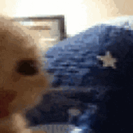

Esta é a primeira página do projeto.
Na imagem apresentada, observa-se um felino doméstico em primeiro plano, cuja expressão faciais e postura sugerem um estado de desconfiança ou suspeita direcionada ao dispositivo de captura fotográfica. O animal, de pelagem predominantemente clara com nuances alaranjadas, mantém a cabeça ligeiramente inclinada para frente, de modo que sua fisionomia ocupa integralmente o enquadramento. O olhar do gato, parcialmente semicerrado, revela uma tentativa de avaliação minuciosa do objeto em questão — possivelmente a câmera — denotando cautela. A íris escura, em contraste com a luminosidade ambiente, transmite uma sensação de julgamento inquisitivo, como se o animal estivesse ponderando a natureza e a intenção daquele que o observa. A boca encontra-se discretamente entreaberta, permitindo vislumbrar o contorno do focinho e reforçando a impressão de perplexidade. Essa abertura labial, somada à dilatação aparente das narinas, sugere uma reação imediata a algo inesperado, aproximando a expressão do campo do estranhamento. No que tange à composição visual, a imagem apresenta certo grau de desfocagem e granulação, o que, paradoxalmente, contribui para a dramaticidade do registro, acentuando a impressão de que o observador foi surpreendido por um momento íntimo e não encenado. O enquadramento fechado, restrito quase exclusivamente ao rosto do felino, intensifica a proximidade e amplia a percepção da intensidade do olhar. Assim, a cena pode ser interpretada como um retrato de desconfiança silenciosa, em que o animal, ao fixar sua atenção sobre a lente, estabelece uma interação não verbal que transmite tanto vigilância quanto curiosidade cautelosa.
Tava achando que tinha algo sobre você mesmo?